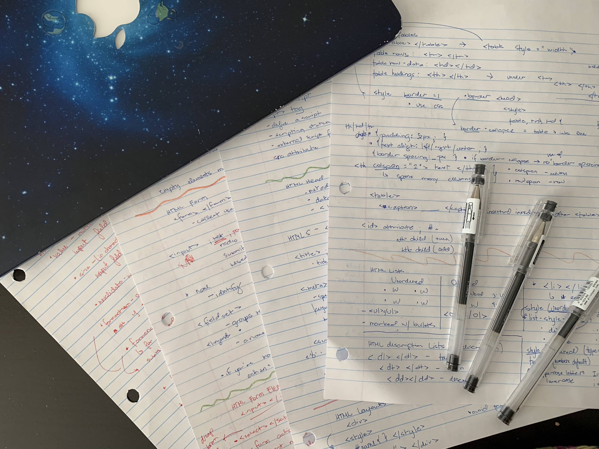
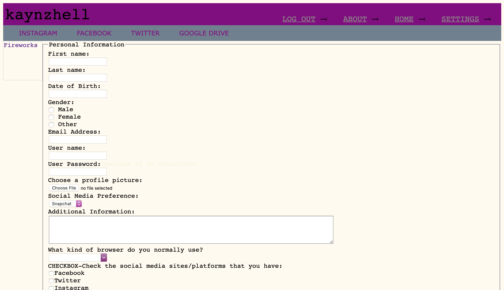

Hello everyone! This is my first blog post, and I want to share my very first experience with HTML.
It was during my first months in Canada in the year 2016. Waiting for the start of the second semester of 9th grade, trying to warm myself up during the cold January days, I looked up how to learn HTML. In this search, I came across w3schools.com, and so, I started to code.

A picture of some of my notes!
I remembered being so proud of seeing the first text on my local HTML file, so much so that I posted it on my instagram (although I have since removed)! It was not the best graphically, but just seeing come into fruition bits by bits (Aha!), it was an amazing feeling.

A screenshot of my first HTML file.
However, after a few weeks in school, I stopped. It was not my proudest decision, but I am back now! I made a webpage hosted by GitHub pages and made using HTML, CSS, and JavaScript. There are still room for a lot of improvements, and I am ready to learn some more!
Written: March 18, 2021
Made with: stackedit.io
Edited locally by: Kaye Misay